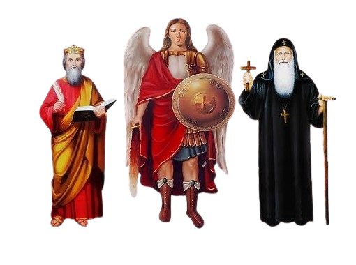

☰
الصفحة الرئيسية
مواعيد القداسات
البث المباشر
طرق التواصل

كنيسة الملاك ميخائيل والأنبا كاراس والقديس يوليوس الأقفهصي - أرض الفولي - الإسكندرية
تحت رعاية أبونا/ لوكاس جرجس
طرق التواصل
🔍 موقع الكنيسة على Google Maps
📺 قناة اليوتيوب
📘 صفحة الفيسبوك